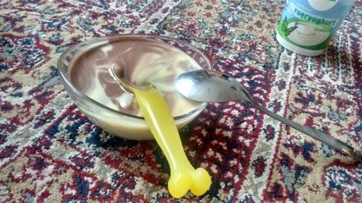

Vaderdag

هلندیها هم روز پدر دارند و هم روز مادر. بچهها از یکی دو هفته قبل یک کاردستی کوچک درست میکنند برای هدیه. با آیدا خانه بودیم و wii بازی میکردیم. دختر مرتب برایم توضیح میداد که چند روز دیگر «پدر روز» است و کادویت را فلانجا گذاشته ام و حق نداری بازش کنی. پدر روز را مستقیم از هلندی ترجمه میکرد و جوری میگفت انگار بخواهد بگوید پدرسگ! وسط بازی هوس دسر کرده بود. رفت برای خودش vla بریزد. برگشت با یک کاسه فلا و دو تا قاشق. بی هیچ حرفی. از آن لحظاتی بود که جاذبه زمین صفر میشود.
دیدگاهها
Comments powered by Disqus